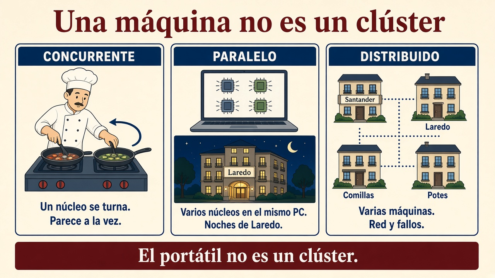
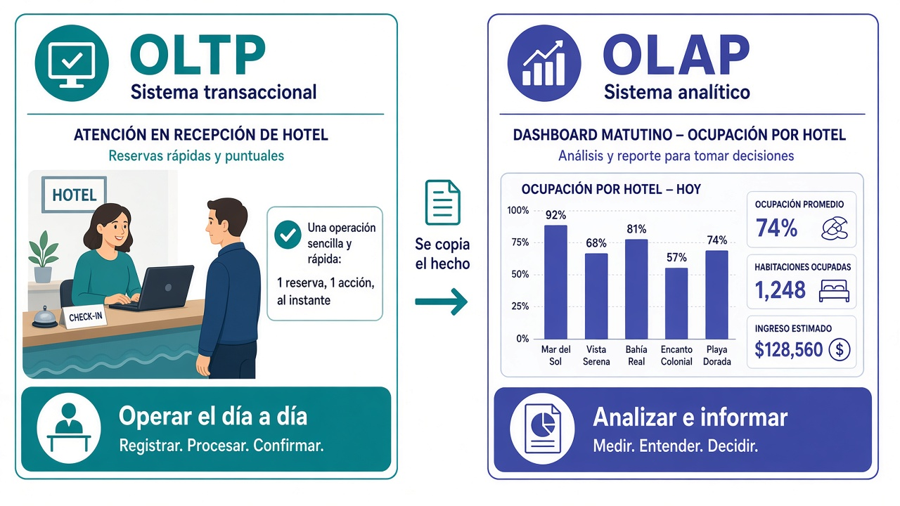
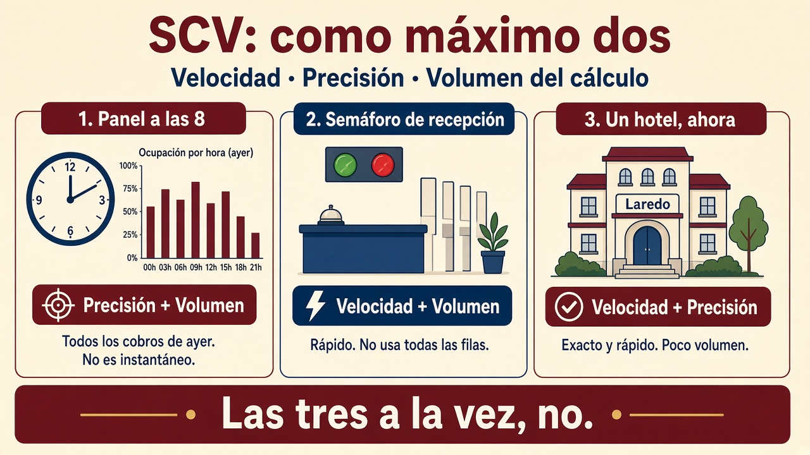

1.4. Procesamiento de datos¶
Almacenar no basta: el criterio d) pide procesar lo guardado. El a) también entra: hay que caracterizar cómo se parte el trabajo y con qué prisa tiene que salir el número. Un dato en el lago que nadie transforma no sirve a gerencia.
En el grupo hotelero eso ya está partido en dos relojes:
- Recepción opera ahora (PMS, cobro). No puede esperar.
- Finanzas cierra a las 23:00; de madrugada corre el lote; a las 8 gerencia abre el panel de ayer.
- Los sensores (~30 s) alimentan el semáforo (“¿queda habitación?”), no el cuadro de las 8.
En clase lo aplicáis en la tarea de los 500 GB: concurrente, paralelo y distribuido, con un portátil que no puede tragarse el fichero.
Cómo se lee esta página
Primero dónde corre el cálculo (un núcleo, varios núcleos, varias máquinas). Luego el ritmo (lote, clic, consulta, flujo). Después los dos oficios (operar / informar) y el SCV (no podéis pedir las tres letras a un análisis). Cómo se combinan lote y flujo en el edificio va en 1.5, no aquí.
Concurrente, paralelo y distribuido¶
Tres palabras que en el pasillo se usan como sinónimos. No lo son. Si las mezcláis, no sabréis si os basta el portátil o hace falta un clúster.
| Tipo | Dónde corre | ¿A la vez de verdad? | En el hotel |
|---|---|---|---|
| Concurrente | Una o varias máquinas | No necesariamente | Un núcleo que se turna: el job y el antivirus |
| Paralelo | Varios núcleos de una máquina | Sí | Diez núcleos suman noches de Laredo |
| Distribuido | Varias máquinas en red | Sí, en general (más red y fallos) | Un nodo por hotel: Santander, Laredo, Comillas, Potes |

Concurrente. El sistema operativo reparte el tiempo entre programas. Si solo hay un núcleo, la “multitarea” es simulada: el procesador atiende un rato a cada uno (ventanas de milisegundos). Tenéis la impresión de que el vídeo, el editor y el antivirus van a la vez; en realidad se turnan tan rápido que no lo notáis.
Paralelo (multinúcleo). Varios núcleos físicos, cada uno una CPU de verdad. Ahí sí hay paralelismo real.
Multihilo: un núcleo comparte recursos entre hilos. Mientras un hilo espera un dato de memoria, el otro puede multiplicar. Si los dos necesitan la misma unidad a la vez, uno espera. Por eso un procesador “4 núcleos / 8 hilos” no es lo mismo que 8 núcleos físicos.
Cuándo se puede paralelizar¶
Sí (independiente): sumar noches por hotel. Partís en cuatro trozos (Santander, Laredo, Comillas, Potes), cada núcleo (o cada nodo) suma el suyo, al final sumáis cuatro parciales. El último paso es barato.
No (dependiente): cada paso necesita el resultado del anterior (si el acumulado va par sumáis, si va impar restáis). Aunque cortéis la lista, el segundo trozo no sabe qué hacer hasta que acabe el primero. Más núcleos no acortan ese cuello: es lo que 1.2 llamaba “el clúster no hace magia”.
Pregunta para el examen
“Si solo hay un núcleo y el sistema cambia de programa cada X ms, ¿hace varias tareas al mismo tiempo?”
No. Es multitarea simulada (concurrente). El usuario lo percibe como simultáneo; el silicio no.
Distribuido (entre máquinas)¶
El procesamiento distribuido reparte subtareas a nodos de un clúster. Es paralelo más tres problemas que en un solo PC no teníais:
- Los datos no están todos en la misma RAM.
- La red tarda y a veces falla.
- Un nodo puede caer a mitad del trabajo (si se funde el disco de Potes, el job tiene que reintentar, no publicar el panel a medias).
En Hadoop de libro la consigna es “lleva el cálculo al dato”: copiar 200 GB al portátil para sumarlos es absurdo; mandáis la función al nodo que ya tiene el trozo. En un cubo de objetos a menudo es al revés: el dato vive en el cubo y el motor lee por red (1.2). Las dos frases no se pisan: son dos diseños.
MapReduce y Spark viven aquí. En este módulo no tenéis que programarlos aún; sí debéis saber por qué existen. El i7 de la tarea no es un clúster.
Estrategias: no todo es “tiempo real”¶
El ritmo del trabajo no es la transacción ACID del cobro. ACID es la garantía (todo o nada). Aquí es cuánto podéis esperar el número.
| Estrategia | ¿Urge el resultado? | En el hotel |
|---|---|---|
| Por lotes (batch) | No | Finanzas cierra a las 23:00; el job de madrugada; el panel de las 8 (ayer) |
| Por transacciones | Sí (muy por debajo de 1 s) | Picar el cobro en el PMS. Es el reloj del clic, no “ACID” |
| Interactivo | Sí, mientras miráis | A las 11 filtráis Laredo en el almacén: “¿cómo vamos hoy?”. No es el panel de las 8 |
| Flujo (streaming) | Sí, al ritmo en que llegan | Sensores cada ~30 s → semáforo de recepción |
flowchart TB
subgraph lote [Lote: no es tiempo real]
F[Finanzas cierra a las 23:00]
N[Job de la noche]
P8[Panel de gerencia a las 8]
F --> N --> P8
end
subgraph flujo [Flujo]
SEN[Sensores cada 30 s]
SEM[Semáforo: ¿queda habitación?]
SEN --> SEM
end
subgraph clic [Clic en recepción]
PMS[PMS: cobrar ahora]
endTrampa de vocabulario (muy examinable)
Un cobro ocurre en tiempo real (recepción no espera).
Un análisis en tiempo real no es lo mismo: no estáis confirmando un cobro, estáis consultando o resumiendo.
El panel de las 8 no es tiempo real: es el lote de ayer.
La palabra inglesa online aquí solo significa “mientras usáis el sistema”, no “hay una transacción de dinero”.
Streaming añade otra dificultad: las cuentas se actualizan conforme llegan los datos. Suele hacerse en memoria, así que hay un techo de cuánto podéis tener “caliente”. No es “un lote, pero más rápido”: es otro contrato. Cómo se combinan lote y flujo (Lambda / Kappa) está en 1.5.
Dos trabajos: operar el día a día o analizar el histórico¶
En el hotel conviven dos oficios que parecen el mismo (“usar el ordenador con datos”) y no lo son.
Oficio 1 — Operar. Recepción pica la reserva y el cobro. Muchas personas a la vez, cada una toca poca información, y tiene que terminar en milisegundos. Si esto se atasca, hay cola en el mostrador.
Oficio 2 — Analizar. Gerencia pregunta “ocupación de agosto en Laredo frente a julio” o “importe cobrado por hotel”. Eso recorre mucho histórico, resume, compara. Nadie está esperando con la tarjeta en la mano, pero el número tiene que ser defendible.
Mezclar los dos en la misma tabla “para no duplicar” suele acabar así:
- recepción espera porque el informe está recorriendo el PMS, o
- el informe tarda una eternidad porque la tabla está pensada para cobrar, no para resumir.
Por eso se copian los hechos del oficio 1 hacia un almacén del oficio 2 (eso es la ingesta). El segundo no sustituye al primero: se alimenta de él.
Cómo se llaman en los libros: OLTP y OLAP¶
Cuando leáis documentación o un examen, esos dos oficios aparecen con siglas inglesas. No asumáis que las conocéis: son solo nombres de lo de arriba.

| OLTP | OLAP | |
|---|---|---|
| Significa | Online Transaction Processing: procesar operaciones del día a día | Online Analytical Processing: procesar consultas de análisis |
| En el hotel | PMS: cobrar, reservar, check-in | Panel de las 8, ocupación por hotel |
| Pregunta típica | “Cobra esta estancia” | “Ocupación e importe por hotel” |
| Cuánto toca cada vez | Pocas filas | Muchas filas, resúmenes |
| Tiempo | Milisegundos | Segundos (o el lote de la noche) |
| Usuarios | Recepción, web | Gerencia, analistas |
| Relación | Produce los hechos | Lee esos hechos ya copiados e integrados |
Online vuelve a significar “en el sistema, ahora”, no “pago por internet”.
A veces el almacén de análisis guarda el dato ya cortado por ejes (tiempo, hotel, canal). En los libros eso se llama cubo OLAP. La idea es simple: el panel de las 8 no tiene que cruzar diez tablas cada vez; el cruce ya está hecho. Si además cabe en RAM, va rapidísimo… y tiene un límite de tamaño.
No es el cubo de objetos de 1.3 (S3, un fichero entero con una clave). Mismo mote, dos sitios distintos: uno es disco en red; el otro es un resumen ya cortado para el informe.
En 1.3 el warehouse es el sitio típico del oficio 2; el PMS relacional es el sitio típico del oficio 1.
Principio SCV (solo para análisis)¶
Parece el CAP de las bases repartidas, pero no habla de si el saldo se ve igual en todos los nodos. Habla de hacer un cálculo en un sistema de análisis. Como máximo podéis pedirle dos de estas tres cosas:

| Letra | Aquí significa | No lo confundáis con |
|---|---|---|
| Speed (velocidad) | Poco tiempo desde que el dato está en el sistema de análisis hasta el número | La “velocidad” de las 5 V (ritmo al que llegan los datos) |
| Consistency (aquí: precisión) | Usáis todos los datos, sin muestrear | La C de CAP (mismo valor en todos los nodos) ni la C de ACID (reglas del cobro) |
| Volume | Podéis atacar conjuntos enormes | El “volumen” de las 5 V, aplicado al trabajo de cálculo |
En Big Data V casi siempre está (si no, no estaríais aquí). Entonces el menú real es:
| Eliges | Qué sacrificáis | En el hotel |
|---|---|---|
| C + V | Speed | Panel de las 8: todos los cobros de ayer; no es instantáneo |
| S + V | Precisión (muestreo o ventana) | Semáforo: rápido; no usa todas las filas del lago |
| S + C | Volume | Consulta un hotel ahora (Laredo): exacto y rápido; poco volumen |
Pregunta de aula
¿Análisis en tiempo real con todos los petabytes del lago y la misma precisión que el cierre de las 23:00?
En general no: sería S + C + V. O muestreamos (pierde precisión el semáforo) o esperáis al lote (pierde velocidad el panel).
Para el criterio d)
Procesar no es “darle a Ejecutar”. Es elegir lote o flujo, operar o analizar (OLTP u OLAP), y ser conscientes del SCV. Luego, en Pentaho, lo hacéis visible con un flujo que cambia el dato.
Actividad¶
No puntúa en Moodle. Una línea de por qué.
- El portátil tiene 10 núcleos y sumáis noches de Laredo en esa máquina. ¿Paralelo o distribuido?
- El job de madrugada parte el histórico en cuatro nodos (un hotel cada uno). ¿Paralelo o distribuido?
- Recepción cobra una estancia; gerencia abre ocupación por hotel a las 8. ¿OLTP u OLAP en cada caso?
- El semáforo quiere ir al momento, con todas las filas del lago y la misma precisión que el cierre. Según el SCV, ¿se puede? ¿Qué suelta?
Comprobación
Paralelo (una máquina) / distribuido (varias) / OLTP luego OLAP / no: S+C+V no cabe; el semáforo suelta precisión (S+V) o esperáis al lote (C+V).
Autoevaluación del 1.4¶
Quince preguntas (A–D, una correcta) sobre lo esencial del apartado. No puntúan en Moodle. En cada una, Comprobar respuesta: si es correcta o no, y una explicación breve. Podéis repetir el test.